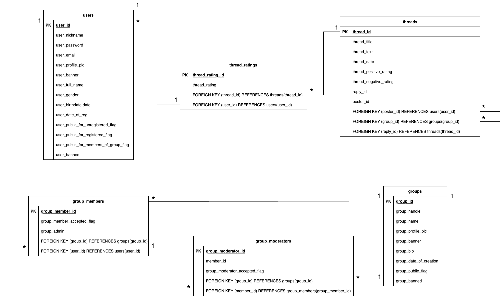

Sociálna sieť
- Autoři
- Matúš Ďurica
xduric06@stud.fit.vutbr.cz -
založenie projektu, implementované časti projektu: Hlavná stránka, Hlavička soc. siete, Diskusné vlákna,
Prehľadávanie skupín a užívateľov, Prihlasovanie, implementácia databázy, implementácia grafického dizajnu,
- Romana Ďuráčiová
xdurac01@stud.fit.vutbr.cz -
dokumentácia a video, wireframe, implementované časti projektu: Nastavenia profilov skupín a užívateľov,
Stránka admina soc. siete, Registrácia, implementácia databázy, implementácia grafického dizajnu,
- Klára Smoleňová
xsmole02@stud.fit.vutbr.cz -
implementované časti projektu: grafický dizajn profilovej stránky užívateľa a skupiny
- URL aplikace
- https://www.stud.fit.vutbr.cz/~xdurac01/
- https://www.stud.fit.vutbr.cz/~xduric06/
Uživatelé systému pro testování
Uveďte prosím existující zástupce všech rolí uživatelů..
| Login |
Heslo |
Role |
| admin |
admin |
Administrátor |
| fitking |
password123 |
Registrovaný užívateľ - moderátor v skupine brno_apartments, admin skupiny fit_students |
| fitqueen |
password456 |
Registrovaný užívateľ |
| --- |
--- |
Neregistrovaný užívateľ |
(Diagram případů užití není nutné vkládat, pokud IS implementuje role a případy užití definované zadáním.)
Video
https://youtu.be/Tk5rifqwp94
Implementace
Pri implementacii sme sa inšpirovali modelom MVC a demo kódmi z prednášok. Prezentačná vrstva je
implementovaná v súboroch uložených v adresári "views". Aplikačná vrstva je obsiahnutá v
PHP a JavaScript skriptoch v adresári "scripts", kde sa zároveň nachádza
aj súbor "services.php", ktorý obsahuje triedu AccountService implementujúcu funkcie pre prácu s
databázou. V súbore "main.js" sú implementované nevyhnutné JavaScript funkcie. Pre dizajn frontendu sme
použili tailwindCSS framework.
- správa užívateľov a skupín:
-
views/dashboardPageView.php
scripts/services.php | main.js | changeBannedStatus.php | changeGroupBannedStatus.php |
deleteGroup.php | deleteUser.php
components/header.php | adminDashboardGroupsItem.php | adminDashboardUsersItem.php
- prechádzanie užívateľov a skupín:
-
views/browsePageView.php
scripts/services.php | main.js
components/header.php | browserPageGroup.php | browserPageUser.php
- editácia profilu:
-
views/settingsGroup.php | settingsUser.php
scripts/services.php | main.js | updateAccount.php | updateGroupSettings.php | updatePassword.php |
updateUserPublicity.php | uploadBannerPic.php | uploadGroupBannerPic.php | uploadProfilePic.php |
uploadProfilePicGroup.php
components/header.php
- založenie skupiny:
- views/browsePageView.php
scripts/services.php | main.js
components/header.php | browserPageGroup.php | browserPageUser.php
- spravovanie skupiny:
-
views/groupPageView.php | settingsGroup.php
scripts/services.php
| main.js | deleteGroup.php | deleteGroupByAdmin.php | deleteThread.php | handleJoinRequest.php |
handleModeratorRequest.php | kickFromGroup.php | removeModerator.php | requestModerator.php |
updateGroupSettings.php | uploadGroupBannerPic.php | uploadProfilePicGroup.php
components/header.php | groupJoinRequest.php | groupModeratorRequest.php | groupPageAdmin.php |
groupPageMembers.php | groupPageModerator.php
- registrácia do skupiny (a odhlásenie zo skupiny):
-
views/groupPageView.php
scripts/services.php | main.js | joinGroup.php | leaveGroup.php
components/header.php | browserPageGroup.php | browserPageUser.php
- vytvorenie nového vlákna:
-
views/threadCreationView.php
scripts/services.php | main.js | insertThread.php
components/header.php
- pridanie odpovede na vlákno, úprava vlákna autorom, vymazanie vlákna autorom
-
views/threadPageView.php | threadEditView.php
scripts/services.php | main.js | insertReply.php | updateThread.php | deleteThread.php
components/header.php | thread.php | reply.php | comment.php
- žiadosť o pridanie za moderátora:
-
views/groupPageView.php
scripts/services.php | main.js | requestModerator.php
components/header.php
- založenie skupiny:
-
views/browsePageView.php
scripts/services.php | main.js
components/header.php | browserPageGroup.php | browserPageUser.php
- registrácia užívateľa
-
views/registerPageView.php | postRegisterView.php
scripts/services.php | main.js | insert_account.php
- prihlásenie (odhlásenie) užívateľa:
-
views/loginPageView.php | mainPageView.php
scripts/services.php | main.js | login.php | logout.php
components/header.php
- hlavná stránka IS s prehľadom vlákien a možnosťou pridávania hodnotenia, skupín užívateľa, hlavičkou s
funkciami:
-
views/mainPageView.php
scripts/services.php | main.js | rankNegative.php | rankPositive.php
components/header.php | thread.php | mainPageGroup.php | comment.php
Databáze
(Pre lepšie rozlíšenie otvorte v novej karte.)

Instalace
- Postup konfigurácie na serveri eva.fit.vutbr.cz
- Odovzdaný archív je potrebné rozbaliť do priečinku WWW v domovskom adresári užívateľa. V súbore
WWW/scripts/db_connect.php nastaviť údaje pre pripojenie na databázu. Pre inicializáciu databázy so
vzorovými dátami je pripravený SQL skript v koreňovom adresári s názvom "db_setup.sql".
- Softwarové požiadavky
- PHP: 8.1
MySQL: 5.7
Známé problémy
Nie sme si vedomí žiadneho bodu zadania, ktorý by nebol implementovaný. Zobrazenie profilových fotiek
(užívateľskej a titulnej) po novom uploade niekedy vypíše error 403.
Kvôli právam na serveri eva, ktoré sa každú noc aktualizujú, toto bohužiaľ nevieme ovplyvniť, ale snažili sme sa
aspoň v ukážkovom videu reprezenotvať správnu funkčnosť tejto funkcie.